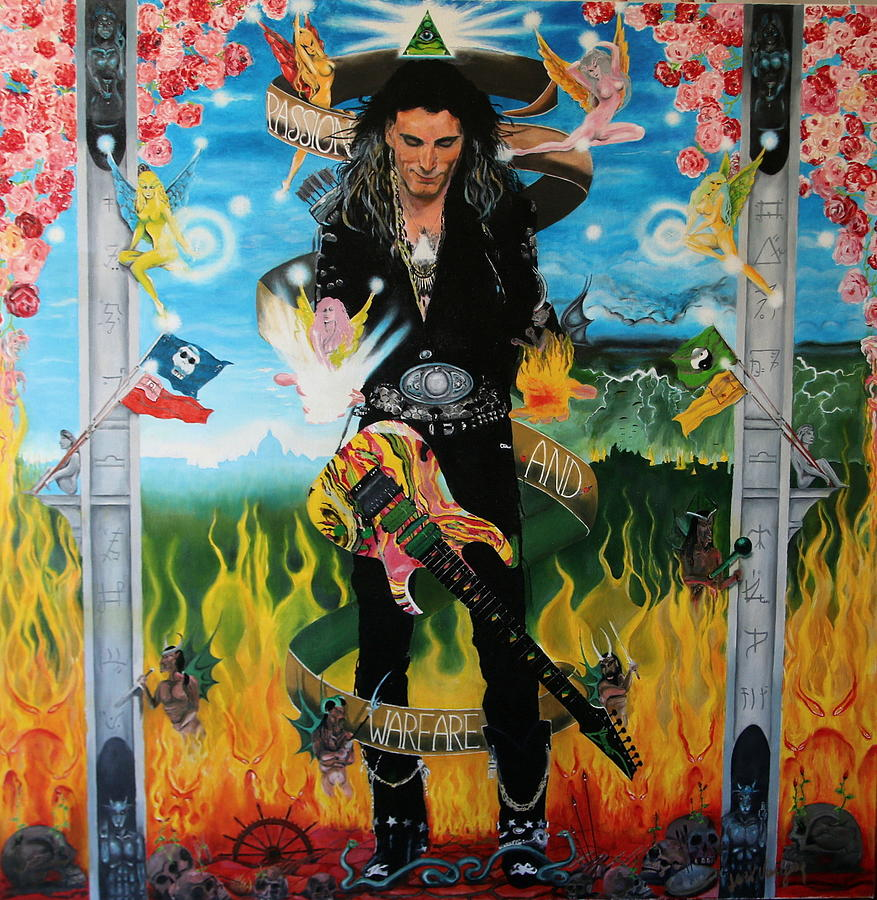

For the Love Of God

Steve Vai y Paganini
Comparar a Steve Vai con Paganini no sería del todo exagerado. Paganini fue conocido por su virtuosismo a la hora de tocar el violín y la velocidad que alcanzaban sus manos para tocar notas imposibles, e incluso fue conocido como el volinista del diablo. El caso de Steve Vai sería algo muy parecido, sería el guitarrista del diablo por esa velocidad y precisión en cada nota, y por ese dominio de la técnica.